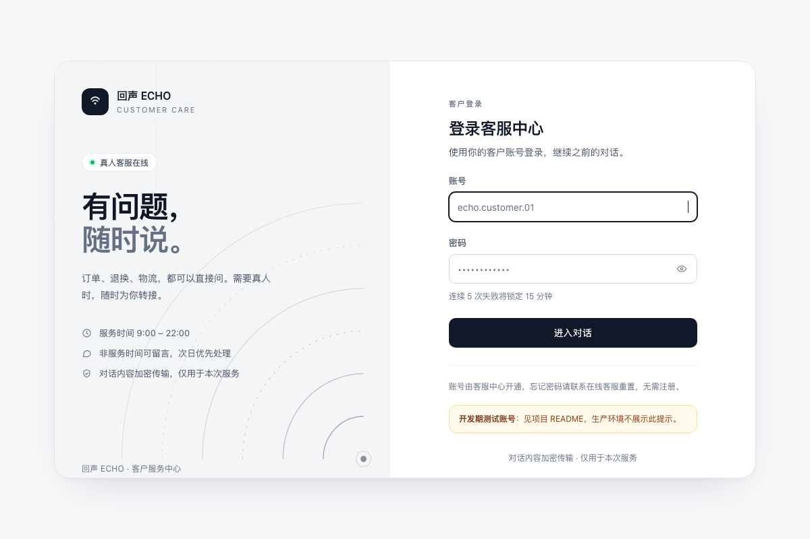
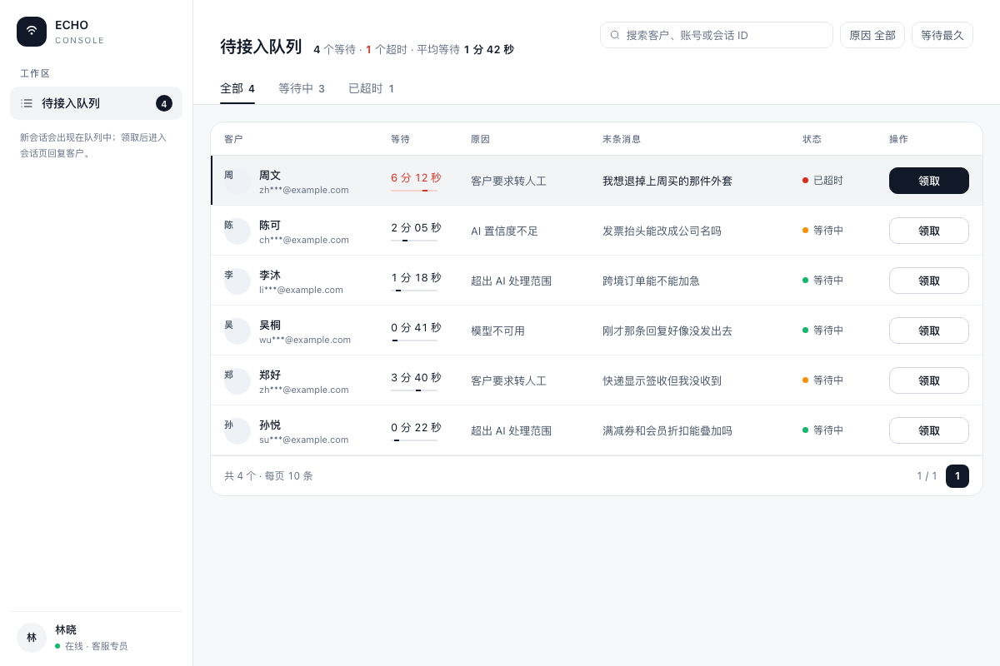
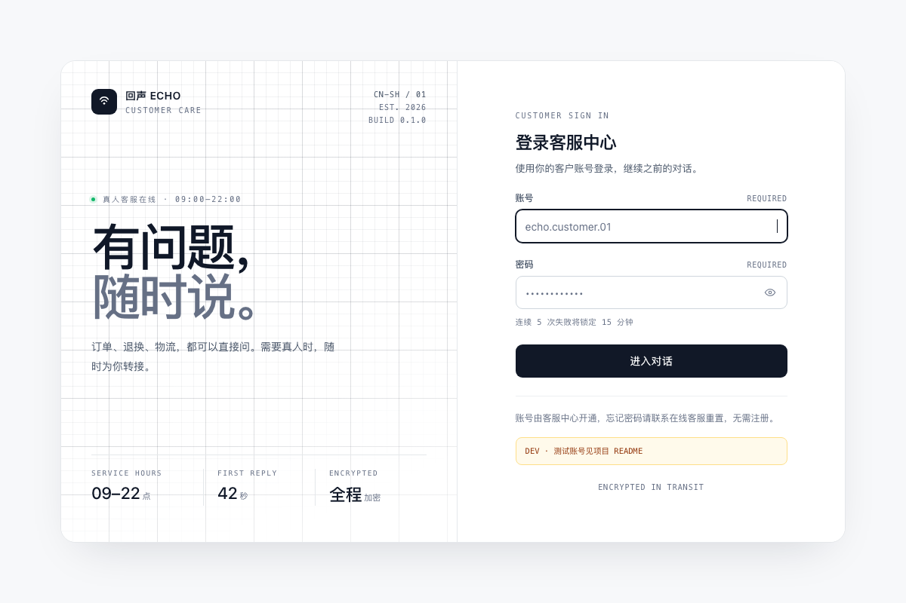
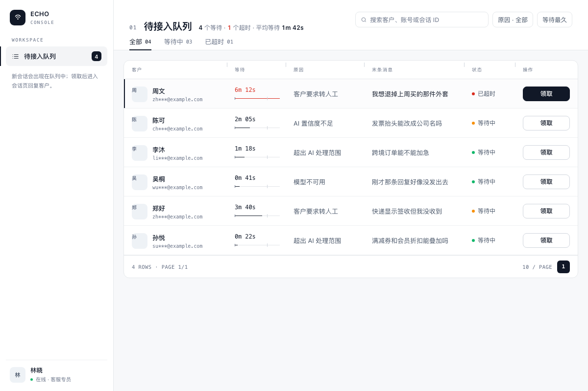
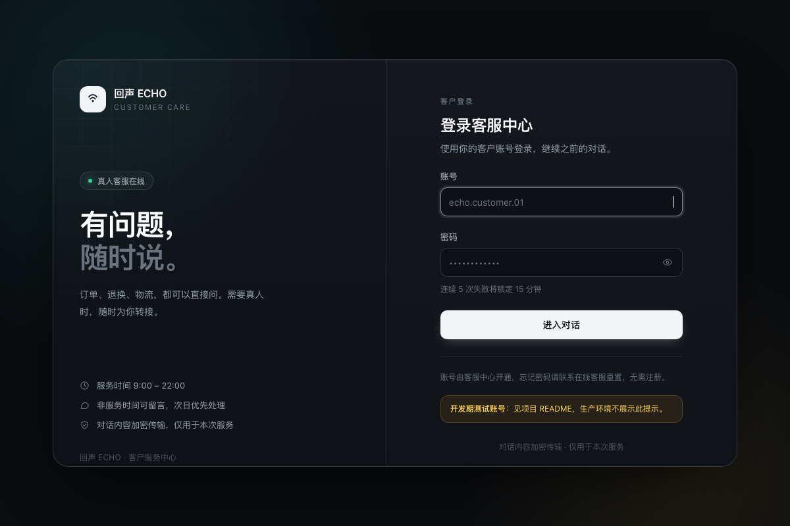
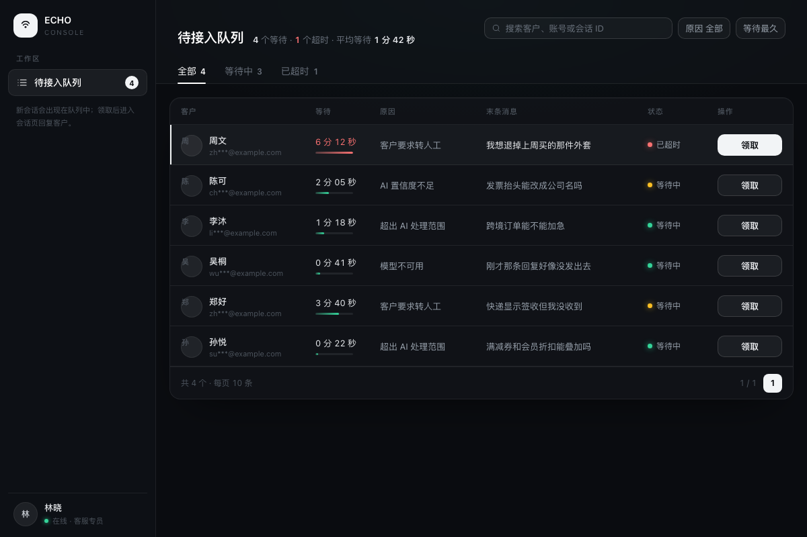
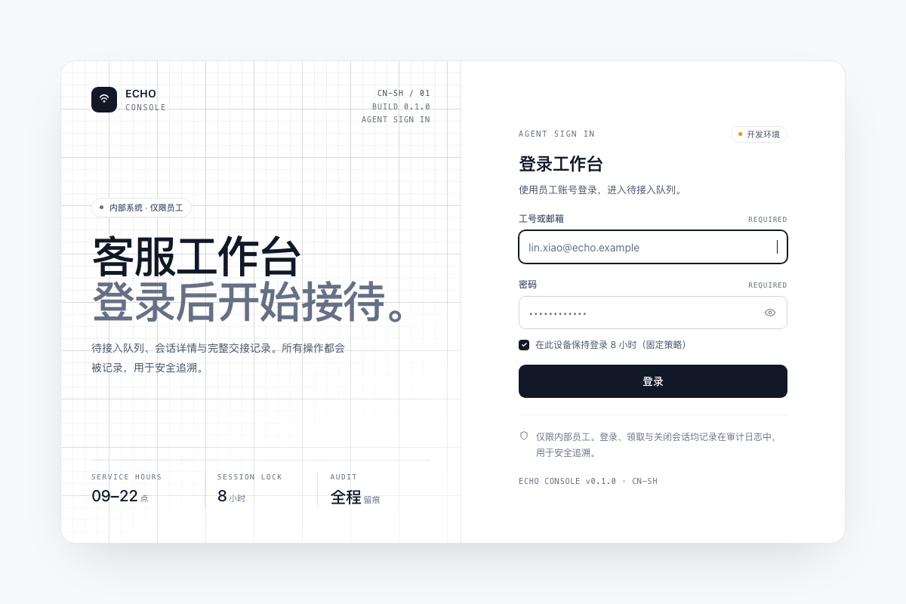
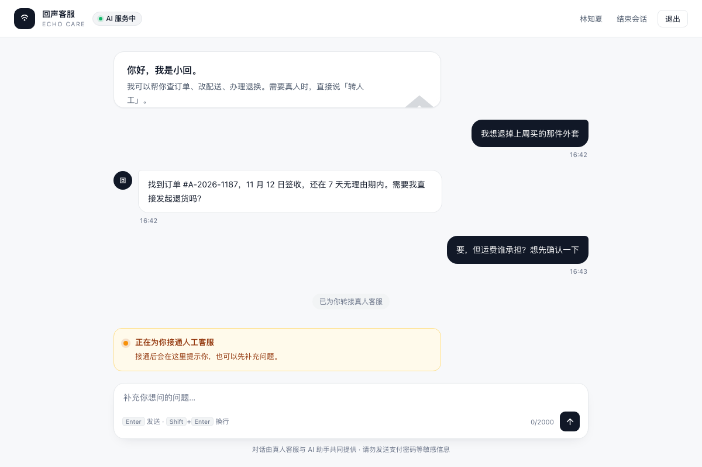

UI 提案 · 2026-11-20 · 待决策
给登录页和工作台补上「设计记忆点」
当前 v5 主题已经做到干净、中性、可用，但没有一处形状、图形或节奏是「回声 ECHO 特有」的。下面三个方向都在现有令牌体系内实现，差别在介入深度与要放开的约束；第 3、4 节补齐了坐席登录与客户聊天，并回答「两侧要不要完全一致」。
样张尺寸 1200 × 800同一套真实文案代码都在本目录
1 · 先说清楚「少了什么」
只有一个强调色，而且是黑主按钮、导航选中、当前行、聊天气泡全是同一片 #111827，界面九成是灰阶，眼睛找不到落点。
登录页左侧 44% 是空白预算品牌区只放文案，声波背景只有 4.5% 不透明度——它存在，但没人看得见。
内部页面没有形态语言侧栏、表格、抽屉全靠 1px 描边和 16px 圆角区分，形状本身不承载任何品牌信息。
动效被压到接近静止规范只留入场 240ms、反馈 120ms、等待脉冲 1600ms，页面之间切换像在翻静态图。
字号五档，节奏偏平标题 20 与正文 14 只差 6px，页面层级主要靠留白撑，读起来「规整但不兴奋」。
两个登录页几乎一样客户与坐席共用同一布局、同一张卡片，只换文案——从登录页看不出这是两个不同的使用场景。
2 · 三个方向

A · 登录页：右下角同心弧，实线与虚线交替，外淡内浓
A · 队列页：等待时长变成一条脉冲轨道，超时整条转红
B · 登录页：制图网格 + 超大标题 + 底部三栏事实
B · 队列页：编号、列刻度、等宽数字、带阈值的等待标尺
C · 登录页：近黑底 + 低饱和光晕 + 反色主按钮
C · 队列页：深色侧栏、发光状态点、全页唯一高亮的主按钮方向 A
回声 · 把品牌名做成图形系统
改动面最小
「ECHO」不是虚名：声音碰到东西会回来。用同心弧把「发出 → 返回」画出来，弧线从品牌角发出，末端收成一个实心点。
- 登录页：右下角 6 条同心弧，实线与虚线交替，外淡内浓（9%→34%），末端实心点。
- 队列页：等待列换成一条 56px 的脉冲轨道，光点位置 = 等待时长，超过 5 分钟整条转红。
- 延伸：AI 消息尾部一个小三弧标记；加载态是「声波呼吸」而不是转圈。
| 代价 | 说明 |
|---|
| 工作量 | 登录品牌组件 + 队列等待列 + 2 个令牌；无后端、无新依赖 |
| 要放开的约束 | ui-spec 2.7 禁止「装饰性循环动画」、第 6 节禁止「装饰插画」。不放开就只能是静态弧线，生命力少一半 |
| 风险 | 弧线一旦变浓就会抢标题；需要锁死在 35% 不透明度以内 |
方向 B
值班台 · 用制图语言建立专业感
风险最低
客服工作台本质是一台值班仪表：谁在等、等多久、有没有超时。用网格、编号、刻度、等宽数字把它说得更「工程」。
- 登录页：64px 主格 + 16px 次格的淡网格；标题放大到 66px；底部三栏事实（服务时间 / 首次响应 / 加密）用竖线分隔。
- 队列页：标题前
01 编号；表头每列起点一个刻度短线；等待时长的标尺带 5 分钟阈值线；侧栏当前项左侧 2px 标尺。
- 字体：版本号、构建号、等待秒数、计数全部走等宽 + tabular-nums。
| 代价 | 说明 |
|---|
| 工作量 | 登录品牌区重排 + 队列页头/表头 + 字体栈新增等宽族 |
| 要放开的约束 | ui-spec 2.2「全站唯一字体」需补一条「等宽仅用于数字与构建元信息」 |
| 风险 | 网格超过 8% 不透明度就会显脏；移动端要关掉网格，否则小屏噪点 |
方向 C
夜航 · 把近黑从强调色变成底色
成本最高
现在「近黑」只是按钮的颜色。让它成为整个界面，用低饱和光晕做纵深，主按钮反成白色——全页唯一的高亮点。
- 令牌：画布
#0A0C10、表面 #111419、描边 rgba(255,255,255,.075)。
- 登录页：两团径向光晕（青 12%、琥珀 8.5%）+ 网格；白底黑字主按钮。
- 队列页：深色侧栏、发光状态点、带渐变的等待条、表格靠 1px 亮描边浮起。
| 代价 | 说明 |
|---|
| 工作量 | 两套令牌 + 全部页面视觉回归 + 对比度表重算 + AC-40/48 契约测试同步 |
| 要放开的约束 | 与 v5「浅色画布」的决策相反；第 6 节禁用渐变需改为允许「低饱和径向光晕」 |
| 风险 | 长时间值班的深色疲劳争议；截图与基线全部重做 |
3 · 补齐的两张
用「B 的骨架 + A 的点睛」画的：坐席登录走网格与编号（制图语言），客户聊天走弧线与大留白（回声语言）。

坐席登录：网格、CN-SH / BUILD 编号、三栏事实、环境标识
客户聊天：64px 顶栏、860 消息列、18px 气泡、声波只在欢迎卡露一次4 · 两侧要不要完全一致？
结论：不要完全一致，要「同源、不同节奏」。令牌必须一套，图形语言与信息密度可以分叉——这两件事的读者本来就不一样。对照图见 tone-split.png。
| 维度 | 客户侧 | 坐席侧 | 为什么 |
|---|
| 令牌 | 同一套 | 同一套 | 换一套色板，用户会觉得「换了家公司」 |
| 图形语言 | 弧线（声波） | 网格与标尺 | 客户要的是被回应，坐席要的是秩序 |
| 信息密度 | 低，一屏一件事 | 高，一屏 N 个会话 | 客户在等一个答案，坐席在并行处理 |
| 导航 | 没有，只有 64px 顶栏 | 232px 固定侧栏 | 客户只有一条路径，坐席要随时切换 |
| 品牌露出 | 多：大标题、声波、欢迎卡 | 少：mark + 版本 + 环境 | 客户在建立信任，坐席在开始工作 |
| 动效 | 慢、少，像呼吸 | 快、准，只做反馈 | 客户侧慢一点不焦虑，坐席侧慢一点就是积压 |
| 术语 | 「转人工」「正在接通」 | 「5 分钟超时」「领取」「交接单」 | 客户不关心内部阈值，坐席必须看到它 |
唯一的例外登录页是「品牌时刻」，两侧可以几乎共用一套布局；但坐席侧必须露出内部系统、审计、环境标识，客户侧必须露出服务时间与加密承诺——这个差异本身就是语气。
如果完全一致客户聊天页会被塞进侧栏、编号和刻度，客户第一眼看到的是「系统」而不是「人在回话」；坐席队列页反过来会被放大标题和大留白拖累，一屏只能看 4 条。
如果完全不一致两套色板、两套圆角、两套图标，用户从客户侧切到坐席侧会觉得是两个产品——而他们本来就是同一家公司的同一条链路。
5 · 怎么选
要冲击力C。换肤，一眼就不一样，但它改变的是「色调」而不是「品牌」，而且和 v5 的浅色决策正相反。
要性价比B。改动集中在排版与少量背景，和现有「中性优先、文字承载语义」的原则最兼容，同时顺手补上信息密度。
要品牌感A。最贴「回声」这个名字，但必须先想清楚要不要放开循环动画；不放开就只是第二条淡淡的背景线。
我的建议以 B 为骨架（网格 + 编号 + 等宽数字 + 标尺等待），把 A 的唯一一处动效（登录页声波、队列等待脉冲）作为点睛，C 作为可选的「夜间模式」增量而不是替换。三者共用同一套令牌，不冲突。
需要你定的三件事
- 选哪个方向：A / B / C / B+A 组合 / C 作为夜间模式。
- 是否接受放开这三条约束：装饰性循环动画、低饱和渐变光晕、等宽字体用于数字。
- 如果是 C，是替换当前浅色主题，还是做成可切换的夜间模式（多一套令牌 + 前置判断）。
定下来之后，我按项目流程先改 ui-spec 与 tokens.css，再改组件，最后补视觉基线与契约测试。